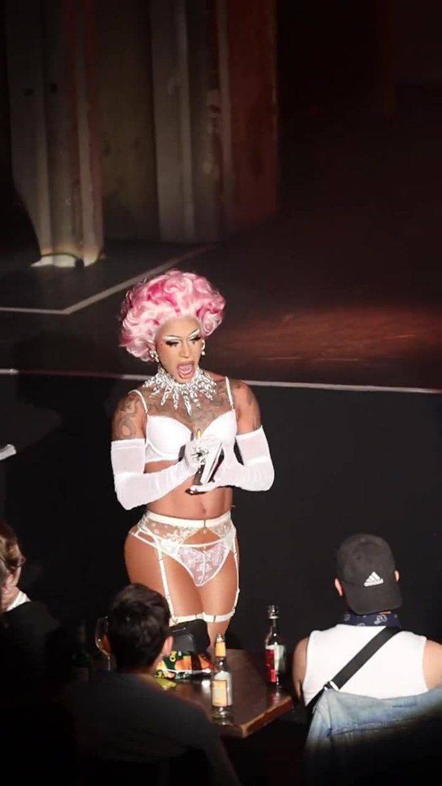
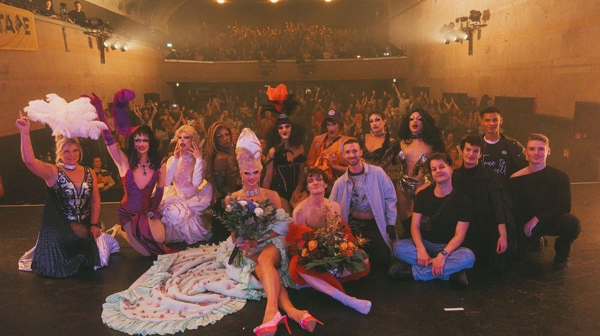
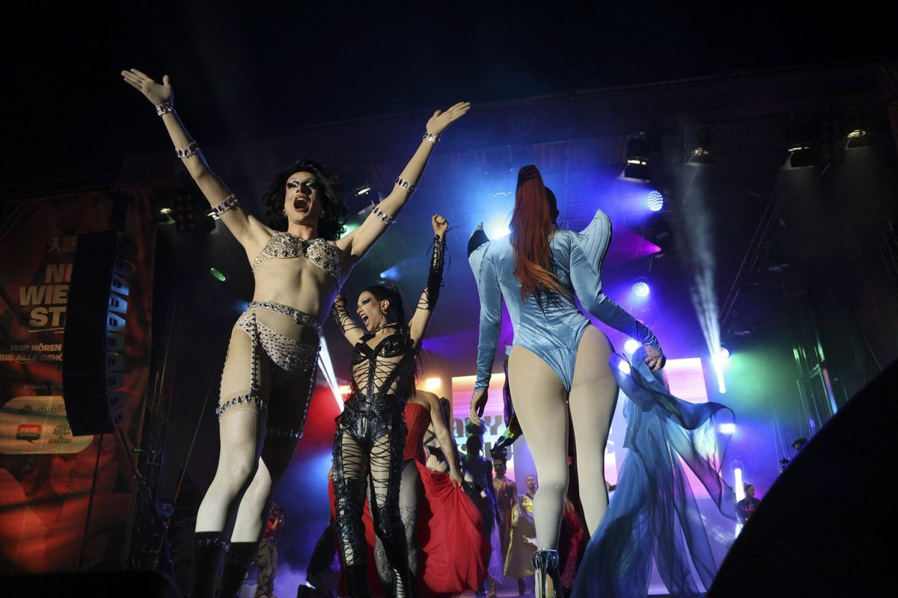
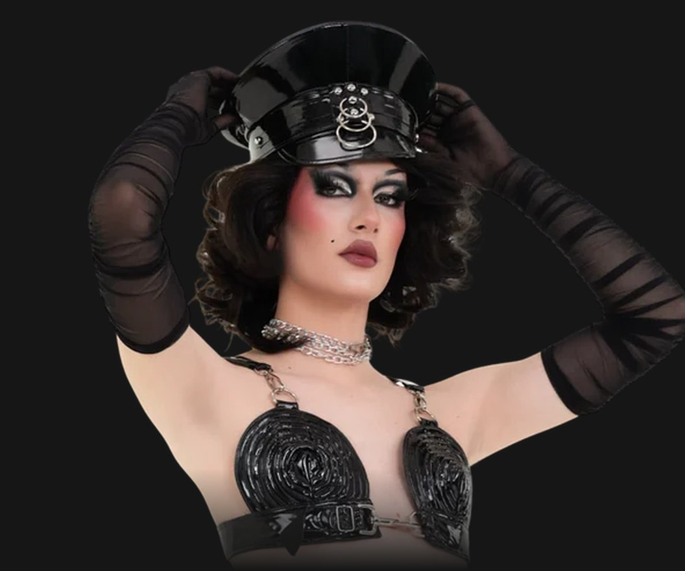
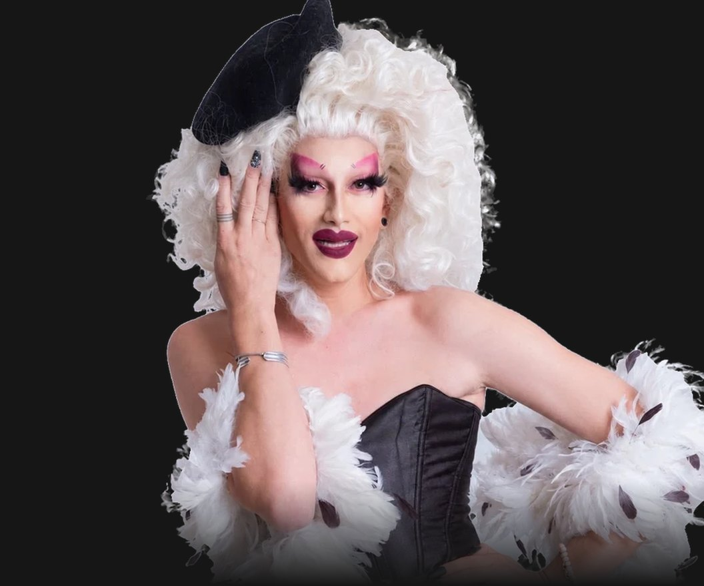
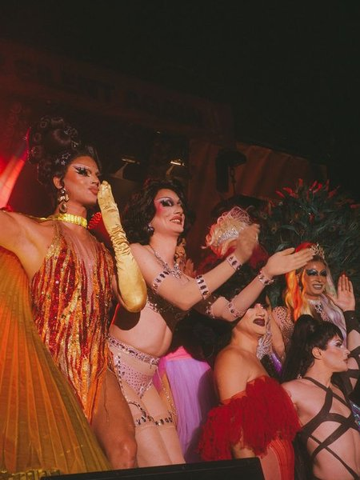
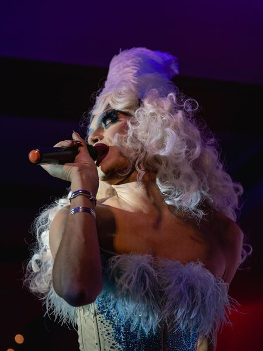
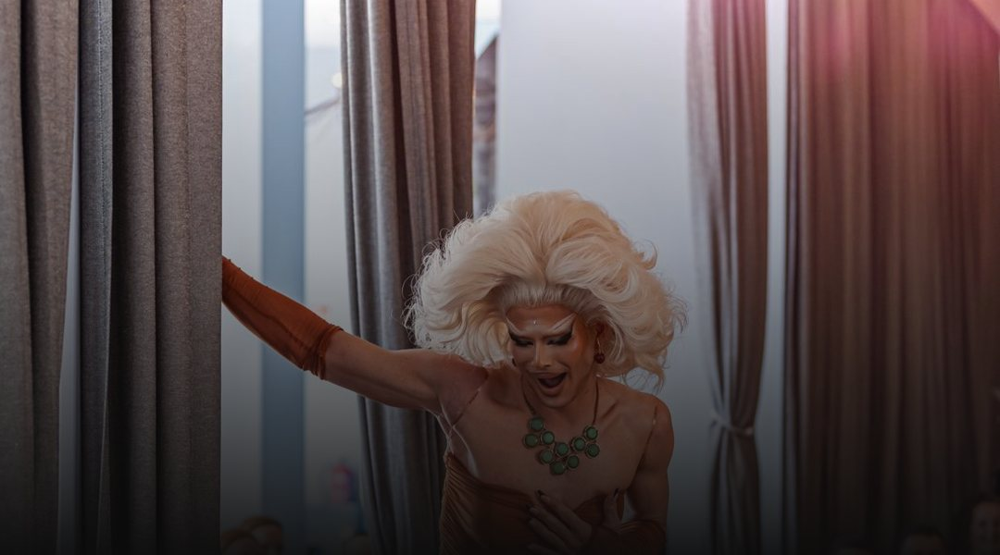
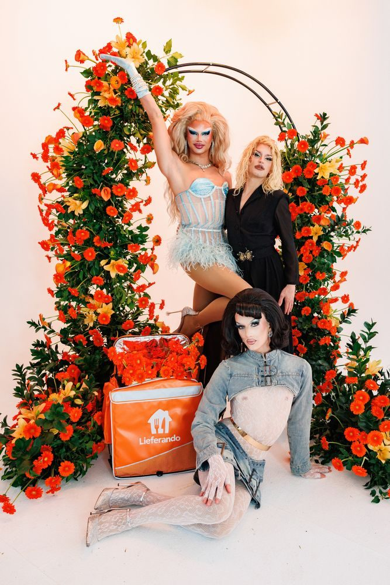
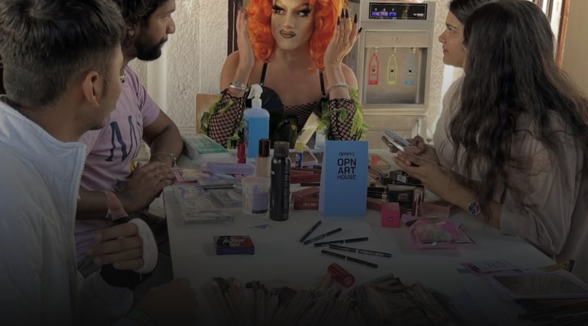

Press Kit
Das Berliner Drag-Kollektiv
von EMI, Symba und Magda von Pfeffer.
Das Berliner Drag-Kollektiv
von EMI, Symba und Magda von Pfeffer.
Über DUCT TAPE
DUCT TAPE ist ein Berliner Drag-Kollektiv, 2022 gegründet von EMI, Symba und Magda von Pfeffer. Die erste gemeinsame Show im Salöön am Holzmarkt war auf Anhieb ausverkauft. Seitdem feiert das Kollektiv jedes Jahr Ende September mit einer großen Birthday Show, und aus einem spontanen Projekt ist eine etablierte Marke für große Drag- und Performanceformate in Berlin geworden.
DUCT TAPE verbindet Drag mit Theater, Comedy, Tanz, Musik, Fashion und Performancekunst und legt sich bewusst auf keine einzelne Drag-Richtung fest. Jede Produktion ist eine eigene Welt mit Dramaturgie, Bildsprache und klarem Qualitätsanspruch, vom selbst geschriebenen Weihnachtsmusical HOLY GLORY bis zur Mainstage des Berliner CSD vor rund 30.000 Menschen.
Rund um das Kollektiv ist die DUCT TAPE Family gewachsen: Drag Queens, Performer*innen, Tänzer*innen und Sänger*innen aus Berlin, Deutschland und der internationalen Szene, darunter Aquaria, Derrick Barry und Jimbo the Drag Clown.



© Peter Ryku · Mango K. Fotografie/Taron Kolywanow · Brigitte Dummer
Das Kollektiv
Drag Queen, Moderatorin und DJ. Verbindet bissige Host-Energie mit Theater und glamouröse Showgirl-Looks mit Lack und Leder.

Drag Queen, Performerin und Tänzerin. Polished, glamourös und auf Perfektion ausgerichtet, Kostüme und Perücken oft in eigener Handarbeit.
Drag Queen, Sängerin, Comedian und Host. Verbindet alte Travestie, deutsches Cabaret und Chanson mit zeitgenössischer Drag.

Leistungen
Abendfüllende Shows und Show-Acts für Galas, Firmenevents und Festivals.

Eigene Partyreihen, DJ-Sets und Show-Acts auf Partys.

Moderation für Events, Award-Shows, Markenevents und Bühnenprogramme.

Drag Bingo mit Show-Einlagen, Drag Brunch mit mehreren Showblöcken.

Kampagnen, Fotoshootings und Social-Media-Content für Marken.

Drag-Make-up und Perücken-Styling für Teams und Gruppen.
Referenzen


Kontakt
Für Booking-Anfragen, Kooperationen und Presse. Fotos und Logos in hoher Auflösung gibt es auf Anfrage.
Fotos: © Anytime Studios, Peter Ryku, Brigitte Dummer, Florian Wiecher, Mango K. Fotografie/Taron Kolywanow, Lieferando, Gaysi Family. DUCT TAPE® ist eine eingetragene Marke.